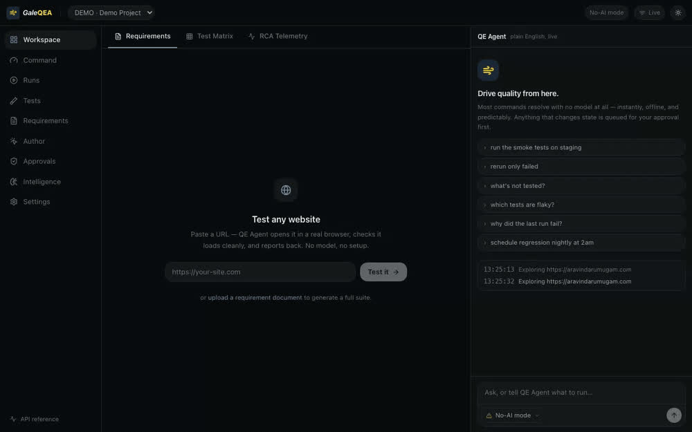

Open-source · self-hostable · runs on any LLM
Point it at any URL.
It explores, plans, tests in a real browser, and reports.
Describe what to test in plain English. GaleQEA drives your app in a real browser, proposes a test plan, builds the tests, heals what breaks, and reports, on whatever model you already use, or none at all.
One command. Installs deps, builds the UI, launches on localhost:8080.

make hero.How it works
One journey, twelve honest stages
Every target moves along the same rail. Nothing is hidden: you see where it is, what it skipped and why, and where a human decision is required. Approvals are structural: the agent can never approve its own work.
- 01TargetA URL and what to test
- 02AccessSign-in handled safely
- 03GuardrailsScope and no-go rules
- 04ExploreMap the app in a real browser
- 05PlanPropose tests for review
- 06BuildGenerate healable tests
- 07SmokeA fast first pass
- 08RunExecute across browsers
- 09TriageNew vs known vs flaky
- 10ReadinessGo / No-Go on live metrics
- 11ReportJSON · Markdown · JUnit
- 12Keep greenSchedule & heal over time
Every kind of testing
Fifteen kinds of test, one agent
GaleQEA doesn't just click through happy paths. It designs tests the way a senior QE would: from the UI, from a spec, and from what it discovers exploring.
Functional / UI
Happy-path and end-to-end user flows
Smoke
A fast subset that gates every change
Regression
The full suite, re-run for free
Exploratory (AI)
The agent hunts for the surprising
Exploratory (tester)
Timeboxed SBTM sessions with notes
API contract
Status + schema conformance from OpenAPI
Boundary & format
Min/max, length, enum, format edges
Negative / required-missing
Every required field, omitted
Auth & permission
Unauthenticated and role checks
Visual regression
Pixel diffs with a sane threshold
Accessibility
axe-driven a11y assertions
Performance
Budgets on real page metrics
Responsive
Mobile and desktop viewports
Form validation
Field rules and error states
Self-healing
Locators that survive UI churn
Pay to build, not to re-run
The model builds. Re-running is free.
Most AI-testing tools call the model on every run and meter you for it. GaleQEA spends the model to build and reason once; after that, execution, deterministic healing, scheduling and reporting need no model and cost nothing.
Spend the model
Building & reasoning
- Exploring a new app
- Designing and generating tests
- Root-cause analysis of a failure
- Proposing a self-heal for review
Your key, your rate
No model needed
Re-running forever
- Executing tests in real browsers
- Deterministic healing of known breaks
- Scheduling & CI runs
- Every report, metric and export
$0.00
Your data, your model
Runs on your LLM, or no LLM at all
No-AI mode
Every core feature works with the model switched off: recording, execution, healing of known signatures, scheduling and reporting are all deterministic.
Bring your own model
Anthropic, OpenAI, Gemini, Azure, or any OpenAI-compatible endpoint. Reuse the key you already pay for, no second AI bill, no lock-in.
Fully local
Point it at a local Ollama or vLLM. Your app, your traffic and your tests never leave your machine.
For test managers
Releases, readiness, and a human sign-off that means something
A full test-manager object model: Requirement → TestCase → Plan → Cycle × Config → Result → Defect, rolled up to a Release. Exit criteria are evaluated against live metrics into a Go / No-Go readiness verdict.
Milestones & exit criteria
Set pass-rate, coverage, flaky and open-blocker thresholds in plain English; readiness is computed against real results.
Cycles & configurations
Run a plan across browsers and environments; each cycle pins the exact test version it executed.
Immutable sign-off
An approver signs Go or No-Go; the decision is audited and immutable, and an AI principal can never sign.
Works with your tools
Fits the stack you already run
File defects, import stories, push results, publish reports and get notified, through a human approval gate, with credentials sealed in a vault.
Product names are the trademarks of their respective owners and are used here only to describe interoperability.
Corporate-ready
Governed, auditable, and yours to host
Open source
Apache-2.0. Yours to read, run, and extend.
No cloud lock-in, no per-run meter, no black box. Clone it, host it, and see exactly what it does with your app and your model.